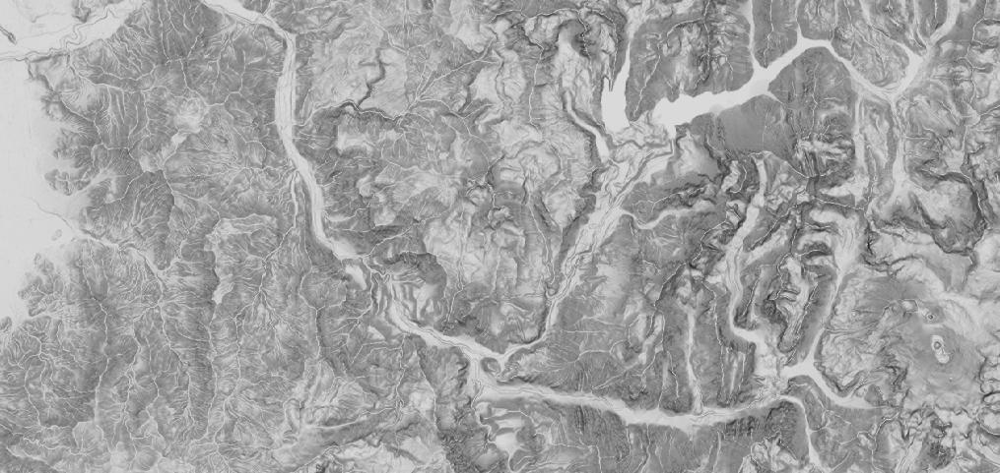

function addNDVI(image){
var ndvi = image.expression("(nir - red) / (nir + red)",{
nir: image.select("B5"),
red: image.select("B4")
}).rename("ndvi")
return ndvi
}
function addNDSI(image){
var ndsi = image.expression("(green - swir) / (green + swir)",{
swir: image.select("B6"),
green: image.select("B3")
}).rename("ndsi")
return ndsi
}
function addNDWI(image){
var ndwi = image.expression("(green - nir) / (green + nir)",{
green: image.select("B3"),
nir: image.select("B5")
}).rename("ndwi")
return ndwi
}var roi = ee.Geometry.Polygon(
[[[-70.57385358886717, -33.53129526610362],
[-70.57385358886717, -33.70340890777862],
[-69.95175275878904, -33.70340890777862],
[-69.95175275878904, -33.53129526610362]]], null, false),
var paleta2 =[
'0602ff', '235cb1', '307ef3', '269db1', '30c8e2', '32d3ef', '3ae237',
'b5e22e', 'd6e21f', 'fff705', 'ffd611', 'ffb613', 'ff8b13', 'ff6e08',
'ff500d', 'ff0000', 'de0101', 'c21301']; // Paleta para demMap.addLayer(all, {min:0, max:1, bands:["ndvi"],
palette:["yellow", "green", "darkgreen"]}, "NDVI");
Map.addLayer(all,{min:0, max:1, bands:["ndsi"],
palette:["black", "white"]}, "NDSI" )
Map.addLayer(all,{min:0, max:1, bands:["ndwi"],
palette:['#f1eef6','#bdc9e1','#74a9cf','#0570b0']}, "NDWI")
Map.addLayer(all, {min:0, max: 8859.0,
bands:["dem"], palette: paleta2},'DEM');
Map.addLayer(all, {min:0, max:2000, gamma:1,
bands:["B4", "B3", "B2"]}, "RGB"); var points = urbano.merge(agua).merge(cultivos).merge(nieve).merge(montana).merge(cerros)
print(points)
var training = composite.sampleRegions({
collection: points,
properties: ["class"],
scale: 30,
tileScale:16
}).randomColumn()
var validation = training.filter(ee.Filter.lt('random', 0.1))// bajo a
training = training.filter(ee.Filter.gte('random', 0.1)) // mayor o igual aprint(training.size())
print(training.reduceColumns(ee.Reducer.frequencyHistogram(), ["class"]))
var classifier = ee.Classifier.randomForest(20).train(training, "class", composite.bandNames())
print(classifier.confusionMatrix().accuracy())
var result = composite.classify(classifier).clip(roi)
Map.addLayer(result, {min:0, max:5,
palette:["grey", "blue", "green", "white", "orange", "yellow"]}, "prediccion")var glaciares_r13 = glaciares.filter(ee.Filter.eq('REGION', 'METROPOLITANA DE SANTIAGO'));
Map.addLayer(glaciares_r13);
var glac_r13_menores = glaciares_r13.filter(ee.Filter.lte('Shape_Area', 500000));//less than or equal
Map.addLayer(glac_r13_menores, {color: '#d63000'});
var echaurren = glaciares_r13.filter(ee.Filter.eq('NOMBRE', 'ECHAURREN'));//equal
Map.addLayer(echaurren, {color: '#bdc9e1'});//Paletas de colores
var paleta1 = ['3ae237', 'b5e22e', 'd6e21f', 'fff705', 'ffd611', 'ffb613', 'ff8b13',
'ff6e08', 'ff500d', 'ff0000', 'de0101', 'c21301', '0602ff', '235cb1', '307ef3',
'269db1', '30c8e2', '32d3ef', '3be285', '3ff38f', '86e26f'];
var paleta2 =['0602ff', '235cb1', '307ef3', '269db1', '30c8e2', '32d3ef', '3ae237',
'b5e22e', 'd6e21f', 'fff705', 'ffd611', 'ffb613', 'ff8b13', 'ff6e08', 'ff500d',
'ff0000', 'de0101', 'c21301'];
var flowAccumulationVis = {min: 0.0, max: 500.0, opacity:0.5,
palette: ['000000', '023858', '006837', '1a9850', '66bd63', 'a6d96a', 'd9ef8b',
'ffffbf', 'fee08b', 'fdae61', 'f46d43', 'd73027']};
var palettes = require('users/gena/packages:palettes')
print(palettes);var slope = ee.Terrain.slope (dem);
Map.centerObject(roi, 11); // Map center
Map.addLayer(slope, {min: 0, max: 90, palette:palettes.cb.Greys[9].slice(2)}, 'slope');